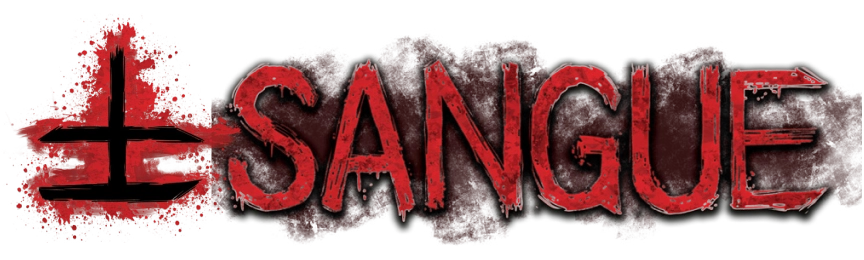

O FLUXO QUE BANHA O OUTRO LADO
" Como um oceano vermelho infinito se espalhando pelos céus, formando ondas de um líquido agressivo, brutal, violento e insaciável. Um fluxo infinito de sentimentos, angústia, paixão, ódio. É como uma tormenta vermelha sem fim, onde as ondas se quebram umas contras as outras, como se tentassem se devorar, e o som resultante desses impactos parecem rosnados demoníacos ecoando por uma imensidão descontrolada."
A entidade dos sentimentos: fome, dor, amor, ódio, paixão, obsessão. Sangue busca a intensidade e tudo que envolve sentir uma emoção extrema agrada essa entidade. A manifestação física do elemento de Sangue na Realidade é um líquido vermelho, espesso, pegajoso e pesado, com um cheiro único e desagradável. Apesar da aparência similar ao sangue humano, análises científicas não encontraram qualquer ligação com materiais orgânicos da Realidade. A tentativa de compreensão do comportamento das células que formam criaturas de Sangue levou cientistas à obsessão, enlouquecendo-os sem respostas concretas.
O comportamento da entidade de Sangue parece ser devorar e consumir o máximo de carne e sangue disponível na Realidade, causando o máximo de dor da maneira mais intensa e extrema possível. O Sangue é a entidade mais comumente encontrada por agentes da Ordem graças às condições necessárias para sua manifestação: ambientes onde violência e dor excessiva foram presenciados. Graças a isso, um velho dizer se tornou popular dentro da Ordem: “TUDO COMEÇA PELO SANGUE”.
A RELÍQUIA DE SANGUE
Ver mais sobre a Relíquia...AFINIDADE COM SANGUE
Possíveis consequências da afinidade com Sangue: sentidos aguçados, sensibilidade a dor, veias saltadas, olhos vermelhos, dentes e unhas afiadas, instabilidade emocional, queda de cabelo e pelos, hipertrofia, etc.
CRIATURAS
Criaturas de Sangue são bestiais, agressivas e nojentas, sendo em sua maioria cegas, mas com seus outros sentidos extremamente aguçados, especialmente o tato. Já que possuem peles expostas tão sensíveis que detectam presenças ao seu redor através da alteração sutil da corrente de vento causado pela movimentação e respiração de seus alvos. Eles “enxergam” através da dor.
Ver mais Criaturas...RITUAIS
Rituais e poderes de Sangue estão associados a alterações físicas e agressivas, com resultados nojentos e brutais. Um ocultista de Sangue dificilmente terá total controle e discernimento das próprias ações. Quanto mais exposição paranormal uma pessoa com afinidade a Sangue tiver, mais próxima de uma criatura bestial ela estará — tanto visualmente quanto psicologicamente.
Ver mais Rituais...Os sentimentos extremos do sangue superam a razão e calmaria do conhecimento
O SANGUE É O ELEMENTO OPRESSOR DO CONHECIMENTO